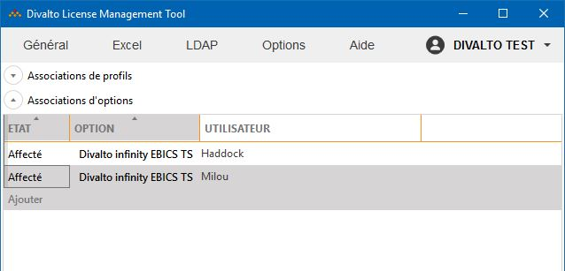

Accueil | DLMT - Gestion des licences nommées | Divalto Licences Management Tool (DLMT) | Association des utilisateurs aux options
L’utilisation de certaines options (par exemple, EBICS-TS) est réservée à des utilisateurs nommés. Ces options apparaissent dans le tableau des options, situé en-dessous du tableau des profils. La saisie des comptes d’utilisateur associés aux options s’effectue de la même manière que celle des profils.
